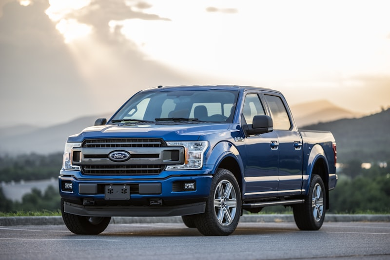

Ford Repair & Service in Cedar Rapids
F-150 to Mustang — every Ford gets expert attention.
Cedar Rapids Ford Specialists
Ford trucks and SUVs are the backbone of Iowa roads, and Cedar Automotive knows them inside and out. Whether you drive an F-150, Explorer, Escape, Mustang, Edge, or Ranger, we have the diagnostic tools and hands-on experience to keep your Ford running right. From routine oil changes to complex EcoBoost turbo repairs, we handle it all — without the dealership price tag.
Ford's modern drivetrains demand specialized knowledge. The 10-speed automatic transmission, EcoBoost turbo engines, and SYNC infotainment systems all require technicians who understand Ford-specific engineering. At Cedar Automotive we use professional-grade scanners that read Ford factory codes — not just generic OBD-II readers — so we find the real problem the first time.
We also service Ford Power Stroke diesel trucks, including the 6.7L and 6.0L platforms. Whether it's a turbo issue, injector replacement, or emissions system repair, our shop handles diesel work that most independent shops turn away. Located in Cedar Rapids near the regional airport, we make it easy to drop off your Ford and get on with your day.
Ford Services We Provide
- Oil changes and fluid services (conventional and synthetic)
- Brake pad, rotor, and caliper replacement
- 10-speed automatic transmission service and repair
- EcoBoost turbocharger diagnostics and repair
- Electrical system and SYNC diagnostics
- Suspension, steering, and alignment
- 4x4 and AWD system service (transfer case, hubs, differentials)
- Power Stroke diesel service (6.0L, 6.7L, 7.3L)
- Car key and key fob programming

Why Choose Cedar Automotive for Your Ford?
Ford-Specific Diagnostics
Professional-grade scanners that read Ford factory codes, module programming, and live data — the same tools dealerships use.
Fair, Honest Pricing
Dealership-quality work at independent shop prices. We give you a straight estimate before any wrench turns.
Truck & Diesel Capable
F-150, Super Duty, Ranger, Power Stroke diesel — we handle the heavy stuff that most shops can't or won't touch.
Common Ford Issues We Fix
Cam Phaser & Timing Chain Noise
The 5.0L Coyote and 3.5L EcoBoost engines are prone to cam phaser wear, causing a ticking or knocking noise at startup. We diagnose phaser and timing chain issues and replace worn components before they cause serious engine damage.
Spark Plug Blowout (5.4L Triton)
Older Ford trucks and SUVs with the 5.4L 3-valve Triton engine are notorious for spark plugs seizing or blowing out of the cylinder head. We use the correct extraction procedures to remove stuck plugs and repair damaged threads.
10-Speed Transmission Shudder
The 10R80 transmission used in the F-150, Explorer, and Mustang can develop a harsh shudder under light throttle. We diagnose whether a fluid flush, adaptive relearn, valve body service, or clutch pack replacement is needed.
Water Pump Failure (EcoBoost)
EcoBoost engines — especially the 1.5L and 2.0L — use an internal water pump driven by the timing chain. When it fails, coolant mixes with engine oil. We catch the early signs and replace the pump before it causes catastrophic damage.
Blend Door Actuator Failure
A clicking noise behind the dashboard and inconsistent cabin temperature are classic signs of a failed blend door actuator. This is one of the most common Ford HVAC complaints, and we replace them efficiently without unnecessary dash tear-down.
Ball Joint Wear
Ford trucks and SUVs — particularly the F-150 and Explorer — are hard on ball joints, especially with Iowa road conditions. Clunking over bumps and loose steering are warning signs. We inspect and replace upper and lower ball joints to restore safe handling.
Related Services
Ford Repair FAQ
How much does Ford F-150 repair cost in Cedar Rapids?
Repair costs vary depending on the issue. Cedar Automotive provides honest, upfront estimates before any work begins — no surprises. Call (319) 450-7584 for a quote on your F-150.
Do you service Ford EcoBoost engines?
Yes. We service all EcoBoost engines including the 1.0L, 1.5L, 2.0L, 2.3L, and 3.5L turbo variants. We handle turbocharger issues, water pump replacement, carbon buildup, and boost leaks.
Can you fix the Ford 10-speed transmission shudder?
Yes. The 10R80 10-speed transmission shudder is a common issue in F-150s and other Ford models. We diagnose the root cause — whether it's a fluid flush, adaptive relearn, valve body service, or clutch pack replacement — and fix it right the first time.
Do you program Ford keys and fobs?
Yes — we program Ford keys and key fobs for all models including F-150, Explorer, Escape, Mustang, Edge, and Ranger. We handle transponder keys, proximity fobs, and all-keys-lost programming. Save significantly compared to dealer pricing. Call (319) 450-7584 for a quote.